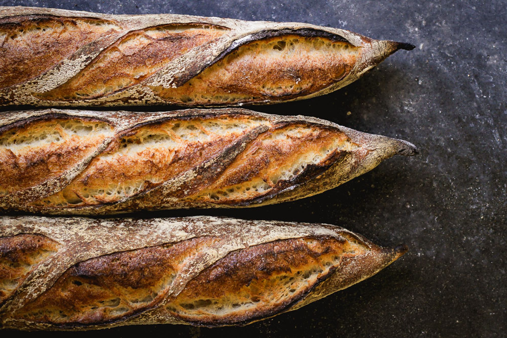
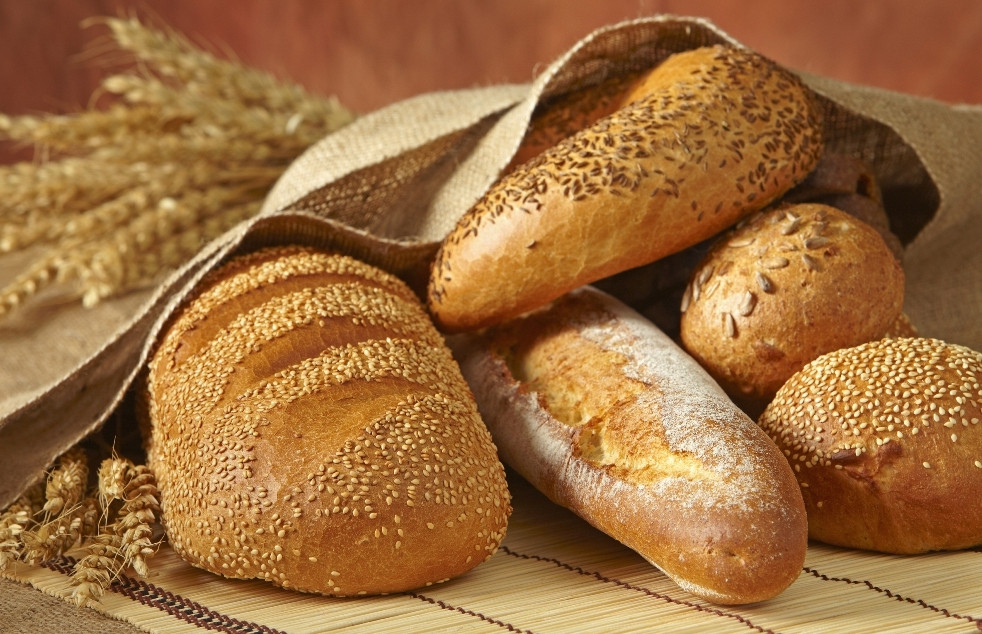

Using organic and locally-sourced ingredients, Negev Bakery serves the freshest pita bread and the crispiest baguettes and never fails to impress their loyal customers with daily-baked breads and fresh, quick lunches. The Negev Bakery also holds a bread-making course every week to spread the traditional art of baking breads!
Here you will find the best assortiment of freshest and crispiest breads !
Fresh Pita Breads Crispy Baguettes